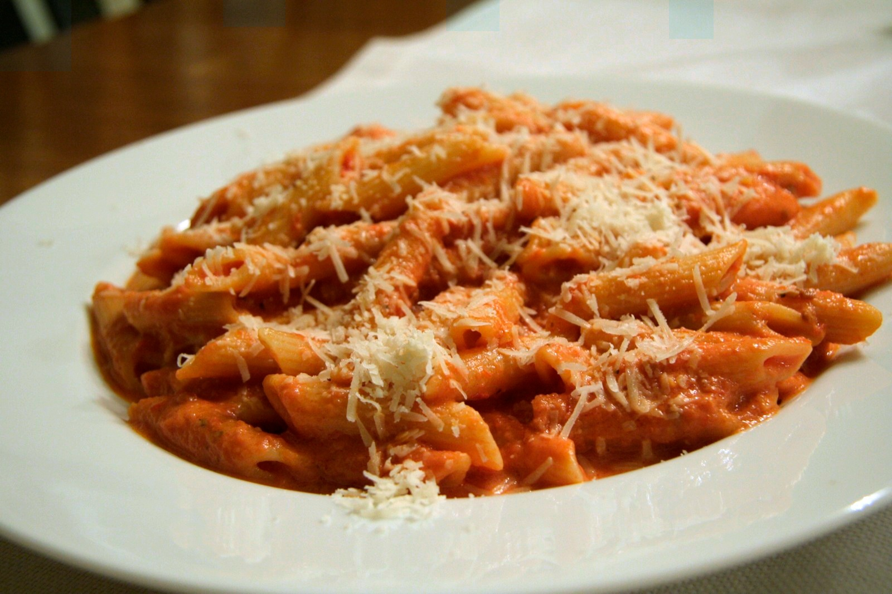

Vodka Pasta

Description
Vodka pasta, also known as penne alla vodka, is a creamy, comforting Italian-American dish that balances tangy
tomato sauce with a touch of heat and the subtle depth of vodka. The sauce is typically made by simmering garlic
and crushed red pepper flakes in olive oil, then adding tomato paste to create a rich, concentrated base. A
splash of vodka is stirred in and cooked down to mellow its sharpness, followed by the addition of heavy cream
for a silky, luscious texture.
The sauce is then tossed with al dente penne pasta, allowing the ridges of the noodles to hold onto the velvety
coating. Optional additions like grated Parmesan cheese or fresh basil can add even more flavor and freshness.
Vodka pasta is a quick yet elegant dish, perfect for weeknights or casual dinner gatherings, offering
bold flavor with minimal ingredients.
Ingredients
- Penne Noodles (16 oz)
- Olive Oil (Two tbsp)
- Crushed Red Pepper (One tbsp)
- Garlic (6 cloves)
- Tomato Paste (8 oz)
- Vodka (2 oz)
- Heavy Cream (6 oz)
- Parmesean (optional)
- Basil (optional)
Steps
- In a medium saucepan or enameled cast iron dutch oven, heat olive oil over medium heat.
- Add smashed garlic and crushed red peppers. Cook until garlic is fragrant and softened.
- While garlic and crushed red peppers are cooking, start boiling well-salted water in a medium sauce pan
or stock pot.
- Add in Tomato Paste. Cook for 5 - 6 minutes or until tomato paste is deep red in color.
- Reserve 1/2 cup of pasta water and combine with heavy cream. This will bring the heavy cream's
temperature up and will result in better emulsification when added to the pan.
- Deglaze the pan by adding in Vodka. Let cook for 1 - 2 minutes.
- Slowly mix in the heavy cream. At this point your sauce should be formed.
- Once noodles are cooked al-dente, using a spider, transfer noodles to the sauce and combine well.
- If sauce isn't sticking to the pasta well, add in some left-over pasta water.
- Turn off heat and salt to taste.
- (Optional) Add in chopped basil and grated parmesean
- Ready to serve!